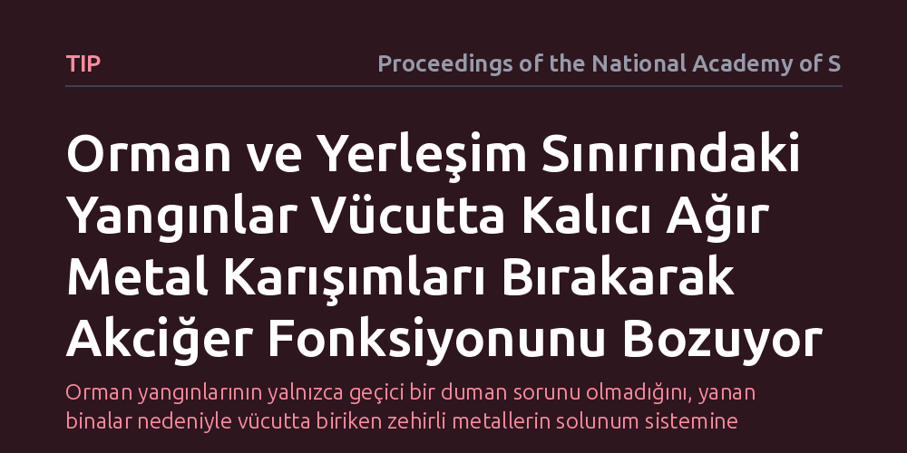

TIP · Proceedings of the National Academy of Sciences · 2026-10-14
Orman-kent kesişimindeki yangınların kentsel altyapıyı yakmasıyla oluşan dumanın insan sağlığı üzerindeki uzun vadeli etkileri incelendi. Araştırma, bu felaketlerin vücutta kalıcı toksik metal karışımları biriktirerek akciğer fonksiyonlarında belirgin bozulmaya yol açtığını ortaya koydu.
Orman yangınlarının yalnızca geçici bir duman sorunu olmadığını, yanan binalar nedeniyle vücutta biriken zehirli metallerin solunum sistemine uzun süreli hasar verdiğini gösteriyor.

Geleneksel orman yangınları dendiğinde akla ilk olarak ağaçların ve çalıların yanmasıyla oluşan bitkisel duman gelir. Oysa iklim krizinin tetiklemesiyle son yıllarda giderek sıklaşan orman-kent arayüzü yangınlarında durum çok farklıdır. Bu bölgelerde alevler yalnızca ormanı değil; evleri, otomobilleri, plastik altyapıyı ve endüstriyel malzemeleri de içine alarak devasa bir alana yayılmaktadır.
Kentsel yapıların ve geçmişten kalan kirleticilerin yanması, atmosfere kurşun ve kadmiyum gibi zehirli ağır metalleri saçar. Bilim insanlarının yanıt aradığı temel soru, bu karmaşık metal kokteylinin solunmasının insan vücudunda kalıcı bir biyolojik iz bırakıp bırakmadığı ve akciğer sağlığını nasıl etkilediğidir. Tehlikenin boyutunu kavramak, yangın sonrası halk sağlığı önlemlerini doğru planlamak açısından kritik bir önem taşımaktadır.
Araştırma ekibi, yangın felaketine maruz kalan bölge sakinlerinden toplanan biyolojik örnekleri inceleyerek vücutta biriken içsel metal düzeylerini belirledi. Katılımcıların solunum kapasiteleri ise akciğer sağlığının temel göstergesi kabul edilen spirometri (solunum fonksiyon testi) yöntemiyle ölçüldü. Bu testler, akciğerlerin ne kadar hava alabildiğini ve bu havanın ne kadar hızlı dışarı verilebildiğini nesnel biçimde kaydetti.
İnsanlar yangın sırasında tek bir kimyasala değil, onlarca farklı maddenin oluşturduğu bir karışıma maruz kaldığından, verilerin çözümlenmesinde çoklu kirletici istatistiksel regresyon modelleri kullanıldı. Bu gelişmiş matematiksel yaklaşımlar, metallerin tek tek etkilerinin ötesine geçerek bir araya geldiklerinde solunum sistemi üzerinde nasıl bir bileşik baskı oluşturduğunu ortaya koymayı sağladı.
Elde edilen sonuçlar, orman-kent sınırındaki yangınların yol açtığı maruziyetin sıradan bir duman solumadan çok daha derin ve kalıcı olduğunu gösterdi. Yangın sonrasında duman gökyüzünden temizlenmiş olsa bile, katılımcıların vücudunda ağır metal karışımlarının uzun süre varlığını koruduğu tespit edildi. Bu durum, kirleticilerin vücutta kalıcı bir içsel yük haline geldiğini kanıtladı.
Araştırmanın en belirleyici bulgusu, vücutta biriken bu metal karışımlarının doğrudan akciğer fonksiyonlarındaki gerilemeyle ilişkili olmasıydı. Birden fazla toksik metalin bir arada bulunması, solunum kapasitesinde ölçülebilir kayıplara yol açıyordu. Çalışma, yangın kaynaklı hasarın yalnızca duman partiküllerinden değil, yanan kentsel yapılardan kaynaklanan metal yükünden ileri geldiğini netleştirdi.
Bu bulgular, yangın sonrası kriz yönetiminde partikül madde ölçümlerine dayalı standart yaklaşımların yetersiz kaldığına işaret ediyor. Havada sadece dumanın yoğunluğuna bakmak, kentsel yapıların yanmasıyla açığa çıkan ağır metallerin yarattığı sinsi kimyasal tehdidi gözden kaçırmaya neden olabilir. Dolayısıyla kentsel yerleşimleri etkileyen yangınların ardından daha kapsamlı toksikolojik değerlendirmelere ihtiyaç vardır.
Sonuç olarak, orman-kent sınırında yaşayan toplulukların yangın sonrasında yalnızca acil müdahaleyle yetinilmeyip, uzun vadeli solunum ve toksisite takibine alınması gerekmektedir. İklim krizinin yangın mevsimlerini uzattığı ve şiddetlendirdiği bir çağda, afete müdahale planlarının odağına uzun süreli halk sağlığı izlemini yerleştirmek hayati bir zorunluluk haline gelmiştir.